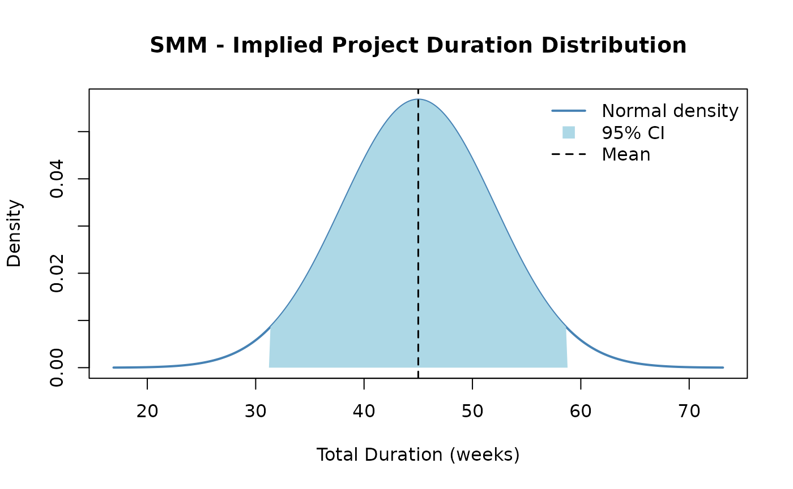

The Second Moment Method (SMM) is a fast, analytical alternative to Monte Carlo simulation for estimating project cost or schedule uncertainty. Rather than running thousands of iterations, SMM propagates uncertainty through a project mathematically using only the mean and variance of each task — the “first two moments” of the probability distribution.
When to Use SMM
SMM is best suited for early-stage estimates when:
- Speed matters and simulation run-time is a concern
- You have credible mean and variance estimates for each task
- Tasks are approximately independent or have well-characterized correlations
- You need a quick sensitivity check before committing to a full Monte Carlo run
Method Overview
For a project with n tasks, SMM computes:
- Total mean: Sum of individual task means:
- Total variance: Sum of variances plus twice the sum of all pairwise covariances:
- Covariance: Derived from the correlation matrix:
Example
We analyze a 3-task project with task durations in weeks. Each task has a known mean and variance, and correlations between tasks are provided.
task_means <- c(10, 15, 20) # Expected duration for each task (weeks)
task_vars <- c(4, 9, 16) # Variance of each task duration
cor_mat <- matrix(c(
1.0, 0.5, 0.3,
0.5, 1.0, 0.4,
0.3, 0.4, 1.0
), nrow = 3, byrow = TRUE)
result <- smm(task_means, task_vars, cor_mat)
cat("Total Mean Duration: ", round(result$total_mean, 2), "weeks\n")Total Mean Duration: 45 weeks
Total Variance: 49.4
Total Std Deviation: 7.03 weeks
Implied Distribution and Confidence Interval
SMM assumes the total project duration is approximately normally distributed. This allows us to construct a confidence interval directly from the mean and standard deviation.
A 95% confidence interval for total project duration is approximately:
total_mean <- result$total_mean
total_sd <- result$total_std
ci_lower <- total_mean - 1.96 * total_sd
ci_upper <- total_mean + 1.96 * total_sd
cat("95% CI: [", round(ci_lower, 1), ",", round(ci_upper, 1), "] weeks\n")95% CI: [ 31.2 , 58.8 ] weeks
The plot below shows the implied normal distribution of total project duration:
x_range <- seq(total_mean - 4 * total_sd, total_mean + 4 * total_sd, length.out = 300)
y_range <- dnorm(x_range, mean = total_mean, sd = total_sd)
plot(x_range, y_range,
type = "l", lwd = 2, col = "steelblue",
main = "SMM - Implied Project Duration Distribution",
xlab = "Total Duration (weeks)", ylab = "Density"
)
# Shade 95% CI region
x_ci <- x_range[x_range >= ci_lower & x_range <= ci_upper]
y_ci <- dnorm(x_ci, mean = total_mean, sd = total_sd)
polygon(c(ci_lower, x_ci, ci_upper), c(0, y_ci, 0),
col = "lightblue", border = NA
)
abline(v = total_mean, col = "black", lty = 2, lwd = 1.5)
legend("topright",
legend = c("Normal density", "95% CI", "Mean"),
col = c("steelblue", "lightblue", "black"),
lty = c(1, NA, 2), lwd = c(2, NA, 1.5),
pch = c(NA, 15, NA), pt.cex = 1.5,
bty = "n"
)
Comparison with Monte Carlo Simulation
Running Monte Carlo simulation with the same task distributions (and no correlation, for a clean comparison) validates the SMM mean. The two methods should yield very similar total means; differences in variance arise because SMM and MCS handle correlated sampling differently.
# Represent each task as a normal distribution for MCS comparison (independent case)
task_dists_for_mcs <- list(
list(type = "normal", mean = task_means[1], sd = sqrt(task_vars[1])),
list(type = "normal", mean = task_means[2], sd = sqrt(task_vars[2])),
list(type = "normal", mean = task_means[3], sd = sqrt(task_vars[3]))
)
# Run MCS without correlation (identity = fully independent)
mcs_result <- mcs(10000, task_dists_for_mcs)
# SMM variance without correlation = sum of individual variances
smm_var_nocor <- sum(task_vars)
comparison <- data.frame(
Method = c("SMM (independent)", "Monte Carlo (10,000 runs)"),
Total_Mean = round(c(result$total_mean, mcs_result$total_mean), 2),
Total_Variance = round(c(smm_var_nocor, mcs_result$total_variance), 2),
Total_StdDev = round(c(sqrt(smm_var_nocor), mcs_result$total_sd), 2)
)
knitr::kable(comparison, caption = "SMM vs. Monte Carlo Comparison (independent tasks)")| Method | Total_Mean | Total_Variance | Total_StdDev |
|---|---|---|---|
| SMM (independent) | 45.00 | 29.00 | 5.39 |
| Monte Carlo (10,000 runs) | 45.01 | 29.83 | 5.46 |
The two methods agree closely on the mean and variance. SMM is faster but assumes normality; Monte Carlo is more flexible and can use any distribution type. When tasks are correlated, SMM adds covariance terms analytically while MCS uses a correlation-based sampling scheme.
Benefits and Limitations
| SMM | Monte Carlo | |
|---|---|---|
| Speed | Instant (analytical) | Slow (thousands of iterations) |
| Inputs needed | Mean + variance per task | Full distribution per task |
| Distribution assumption | Normal (by Central Limit Theorem) | Any distribution |
| Correlation handling | Explicit covariance formula | Cholesky decomposition |
| Skewness / tails | Ignored | Captured accurately |
| Best for | Early estimates, quick checks | Detailed risk analysis, non-normal tasks |